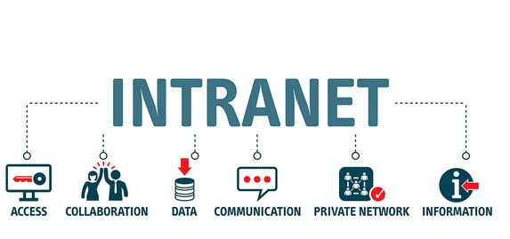
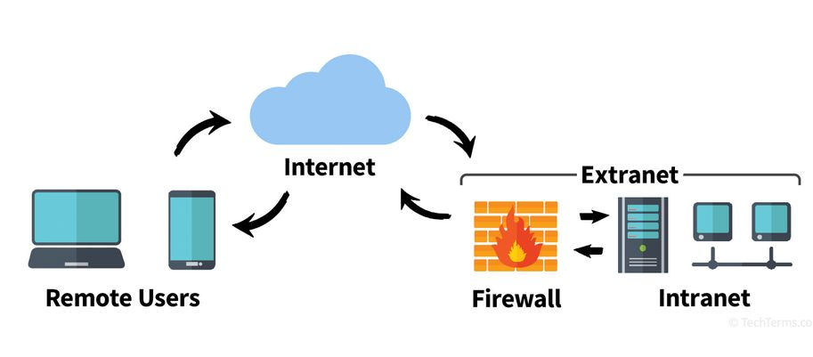

|  |
IntranetUna intranet es una red privada que utiliza tecnología de Internet para compartir información dentro de una organización. Se utiliza para mejorar la comunicación interna y la colaboración. Características:
|
|  |
ExtranetUna extranet es una extensión de una intranet que permite el acceso a ciertos datos y recursos a personas externas, como socios o proveedores, a través de una conexión segura. Características:
|